Plugin Estados
El plugin de Estados es parte de la solución UML+ para la realización de diagramas según la especificación UML 2.0. Los diagramas de estados pertenecen al conjunto de soluciones para el Ingeniero de Sistemas.
Con este diagrama es posible modelar los comportamientos de un clasificador o los cambios de estado dentro de un protocolo.
Los elementos propios de este diagrama son:
- Estado
- SubEstados
- Transición
- Señal de Entrada
- Señal de Salida
- Histórico
- Histórico profundo
- Decisión
- Barra de sincronización
- Punto de entrada
- Punto de salida
- Estado Inicial
- Estado Final
- Puerto
- Enlace a puerto
Los estados son uno de los clasificadores mas importantes de este diagrama. Indican el comportamiento de un objeto en un instante de tiempo determinado. Adicional a la notación básica de Estado es posible agregar actividades, transiciones y particiones como se verá mas adelante. Para crear un Estado dentro del diagrama se selecciona el icono de estado en la barra específica del marco.
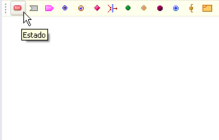
Figura 1. Creación de un estado
Una vez seleccionado aparecerá el diálogo de configuración
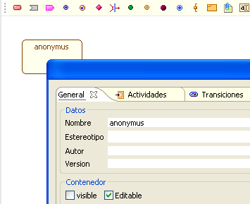
figura 2. Datos para la creación del estado
En la configuración general es necesario proveer un nombre diferente de anonymus , opcionalmente especificar el estereotipo del estado y los atributos convencionales de autor, versión y propiedades del contenedor.
Adicionalmente es posible agregar actividades al Estado. Para agregar una actividad se selecciona la pestaña de Actividades y se diligencia la etiqueta y la expresión de ésta, a continuación se selecciona agregar , con lo que la actividad pasa a ser listada entre las pertenecientes al estado.
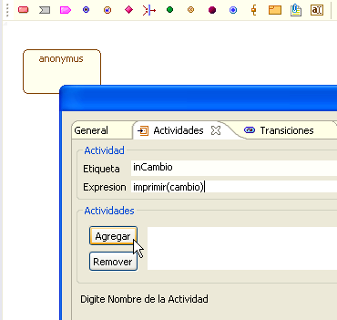
Figura 3. Agregando actividades al estado
De igual manera es posible especificar en el momento de su creación las transiciones de ese estado. Para agregar transiciones se selecciona la pestaña de Transiciones, se agregan los parámetros de Disparo, Guarda y Efecto y se selecciona Agregar.

Figura 4. Agregando transiciones al estado
SubEstados
Los subestados son estados anidados
dentro de otros, a través de estos se pueden crear sub-máquinas de
estado. Para crear subestados primero se debe poner el contenedor del
estado principal como visible.
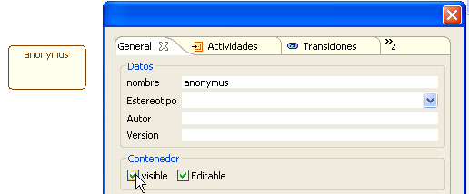
Figura 5. Haciendo el contenedor visible para agregar subestados
Una vez realizado esto, el estado se
divide en el compartimiento inferior donde se pueden agregar mas
estados y el superior donde las actividades se muestran.
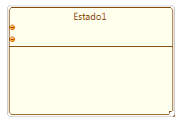
FIgura 6. Representación de estado
Para arrezagar un subestado se crea un estado, como se hace normalmente, en el área inferior del Estado principal visible. El resultado es un estado que se encuentra al interior del estado principal y que no se puede trasladar al exterior de éste (hacia el área de trabajo).
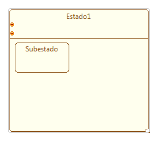
Figura 7. Subestado contenido dentro de estados
Mediante el proceso anterior es posible crear mas subEstados dentro del estado principal o crear subestados anidados, es decir estados dentro de los subestados.

Figura 8. Subestado anidado dentro de un subestado
Transición
Las transiciones permiten conectar los diferentes elementos en el digrama de estados, esencialmente para marcar la forma en que se cambiará entre diferentes estados. Para agregar una transición se selecciona el icono de Transición de la barra específica del marco.
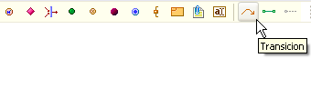
Figura 9. Creación de una transición
Luego se selecciona el elemento origen de la transición, para este caso se pretenden conectar dos estados.
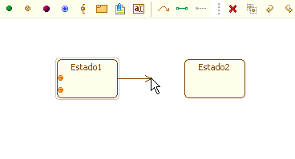
Figura 10. Seleccionado el destino de la transición
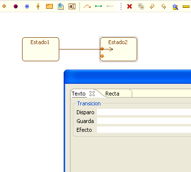
Figura 11. Ingresando datos para la transición
La forma en que se verá la transición una vez se da aceptar es la siguiente.
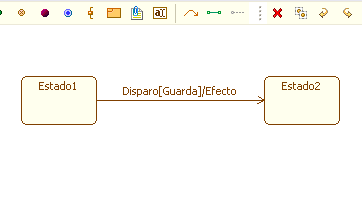
Figura 12. Representación de Disparo, Guarda y Efecto en la transición
Señal de Entrada
Las señales permiten realizar una especificación de mayor detalle sobre las transiciones en el diagrama de Estados. El plugin de estados permite realizar tanto señales de entrada como de salida para el diagrama. Para generar una Señal de Entrada se debe seleccionar el icono con forma de rectángulo con aletas en la parte izquierda de Señal de Entrada
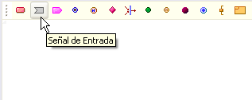
Figura 13. Creando señal de entrada
Al igual que con los Estados al momento de su inclusión en el diagrama se debe especificar un nombre único, opcionalmente el estereotipo, autor, versión, actividades y transiciones propias de la señal de entrada.
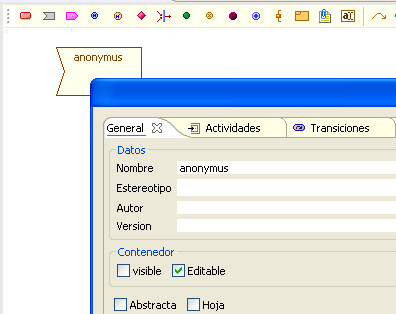
Figura 14. Datos para la señal de entrada
Las señales de entrada se conectan con los estados de la misma manera que los estados se conectan entre sí, a través de las transiciones.
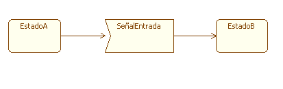
Figura 15. Conexión de señal de entrada con estados
Señal de Salida
Este elemento indica una señal generada a partir de la transición. Para su creación es necesario seleccionar el icono en forma de rectángulo con punta triangular en la parte derecha, éste se encuentra en la barra específica del marco.
Figura 16. Creación de una señal de salida
Al igual que con la señal de entrada es necesario proporcionar un nombre único, opcionalmente estereotipo, autor, versión, actividades y transiciones.
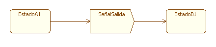
Figura 17. Señal de salida conectada a estados
Este subestado indica que la máquina debe continuar en el último subestado dentro de la región dada, dicho subestado se debe encontrar al mismo nivel. Para crear un histórico es necesario seleccionar el icono de la H rodeado de una circunferencia azul que se encuentra en la barra específica del marco.
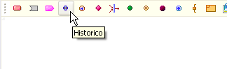
Figura 18. Creación de un histórico
Al igual que otros elementos de este diagrama, el Histórico permite al momento de su creación especificar el nombre, estereotipo, autor, entre otros, pero dichos campos no se muestran directamente en el marco de expresión artística, sino que pueden ser revisados mediante la especificación o en el marco de presentación.
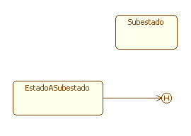
Figura 19. Conexión de un estado con el histórico
Histórico Profundo
Este subestado es similar al Histórico, con la diferencia que indica el salto a el último subestado activo no importa que tan profundo se encuentre éste dentro de la región. El icono para su creación es el de la H rodeada de un círculo rojo, con un pequeño punto en la esquina superior derecha .
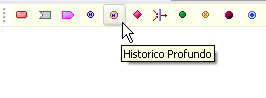
Figura 20. Creación de un histórico profundo
El Histórico Profundo posee los mismos parámetros de creación que el Histórico y es posible conectarlo de la misma manera que éste.
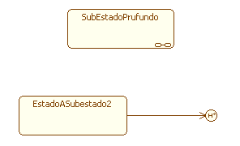
Figura 21. Histórico profundo conectado a un estado
Decisión
Este subestado permite la elección entre diferentes transiciones de acuerdo a la condición de la guarda en éstas. Para crear una decisión se debe seleccionar el icono de decisión en la barra específica del marco.
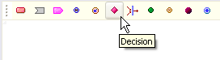
Figura 22. Creación de una decisión
La forma de generar transiciones desde y hacia una Decisión es igual a la de otros elementos de este diagrama. Un ejemplo de como se debería utilizar una decisión en coloso es la siguiente.
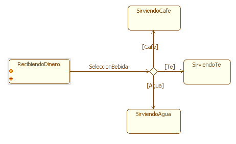
Figura 23. Diferentes rutas para una decisión
Barra de Sincronización
Con este subestado es posible reunir varias transiciones y canalizarlas hacia una sola.. Para crear una barra de sincronización se selecciona el icono correspondiente en la barra específica del marco.
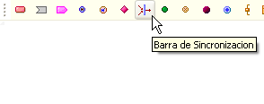
Figura 24. Creando una barra de sincronización
La barra de sincronización permite ajustar gráficos al momento de su creación tal como el color de contorno, fondo, sombreado y la posición bien sea vertical o horizontal de la barra.

Figura 25 Datos para la personalización de la barra de sincronización
Punto de Entrada
Este elemento muestra un posible punto de entrada a un estado compuesto, diferente de la transición por defecto. Para crear un Punto de Entrada se debe seleccionar el icono en forma de círculo verde de la barra específica del marco.
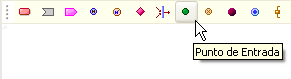
Figura 26. Creación de punto de entrada
El Punto de Entrada posee los mismos parámetros de configuración, es decir proveer de un nombre único dentro del diagrama, opcionalmente un estereotipo, autor, versión, actividades, transiciones y particiones. El nombre solo se mostrará en el marco específico del plugin.
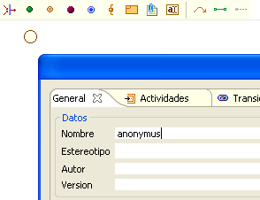
Figura 27. Datos para la creación de punto de entrada
Los puntos de entrada pueden ser asociados a un Estado, Señal de Entrada o Señal de Salida. Para asociar un Punto de Entrada a uno de estos elementos se debe seleccionar el icono para crearlo de la barra especifica del marco y posteriormente hacer clic sobre el Estado que tendrá el punto.
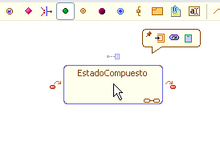
Figura 28. Menú contextual del estado compuesto
Una vez creado este elemento asociado al subestado, éste se puede mover por los bordes del Estado, arrastrandolo con el clic izquierdo, de manera que esté en la posición deseada para generar las transiciones.
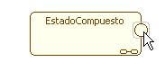
Figura 29. Ubicación del estado compuesto para generar la transiciones
Punto de Salida
Éste elemento marca un posible punto de salida de un estado compuesto, diferente de la transición por defecto. Para crear un Punto de Salida se debe seleccionar el icono en forma de x rodeada por un círculo de la barra específica del marco.
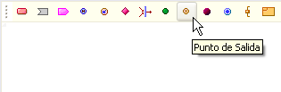
Figura 30. Creación de un punto de salida
Al momento de crear un Punto de Salida se debe suministrar un nombre único dentro del diagrama, opcionalmente el estereotipo, autor, versión, actividades, transiciones y particiones del mismo.
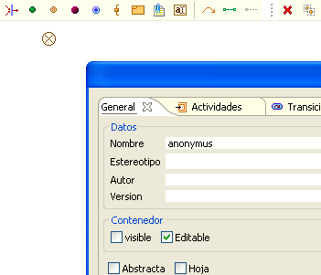
Figura 31. Datos para la creación del punto de salida
Al igual que el Punto de Entrada, es posible asociar un Punto de Salida a un Estado, Señal de Entrada o de Salida. Para hacer esto se selecciona el icono de Punto de Salida de la barra específica del marco y posteriormente se hace clic sobre el Estado al que se desea asociar la transición.
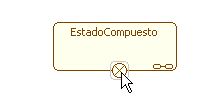
Figura 32. Punto de salida sobre el estado
Una vez asociado a un estado, el Punto de Salida se puede mover libremente por los bordes de este, para ajustarse a la posición deseada para generar la transición.
Estado Inicial
Con este estado se inicia una Máquina de Estados o una partición dentro de un subestado. Para agregar un Estado Inicial al diagrama se debe seleccionar el icono en forma de círculo rojo de la barra específica del marco.
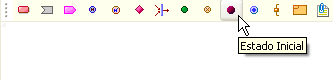
Figura 33. Creación del estado inicial
Para generar el Estado Inicial se deben proveer un nombre único dentro del diagrama y opcionalmente los parámetros proveidos comúnmente. El icono del Estado Inicial dentro del marco es una circunferencia.
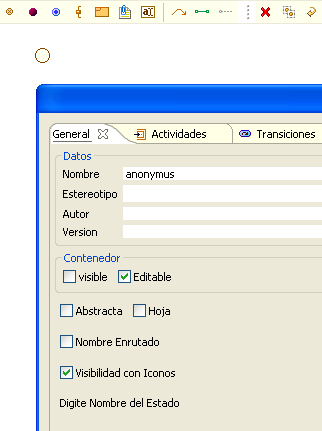
Figura 34. Datos de creación del estado inicial
Estado Final
Con éste estado se marca la finalización de la ejecución de la Máquina de Estados o del subestado al cual pertenece. Para agregar un Estado Final se debe seleccionar el icono del circulo azul contenido dentro de la circunferencia.
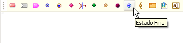
Figura 35. Creación del estado final
Éste elemento posee los mismos parametros de creación que el Estado Inicial.
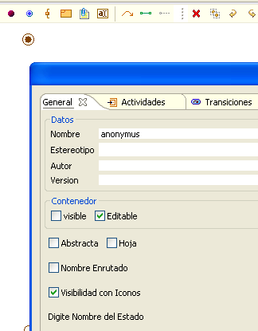
Figura 36. Datos de creación del estado final
Puerto
El puerto es un elemento asociado a un Estado. Para agregar un puerto a un estado se debe seleccionar el icono de puerto en la barra específica del marco y posteriormente seleccionar el Estado sobre el cual se desea generar el puerto.
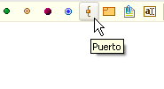
Figura 37. Creación de puerto
Para crear el puerto se tiene que suministrar un nombre único dentro del diagrama y escoger un tipo dentro de los tipos básicos de datos. Opcionalmente es posible escoger un valor y una dimensión para dicho puerto, a la vez que su visibilidad (público, privado o protegido), los modificadores aplicados al puerto y la localización inicial del puerto tanto horizontal como vertical.

Figura 38. Datos de creación de puerto
Una vez generado el puerto, es posible moverlo a taves de los bordes del Estado, seleccionando y arrastrandolo con el clic izquierdo
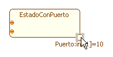
Figura 39. Ubicando el puerto en el estado
Enlace A Puerto
Éste elemento permite conectar dos puertos pertenecientes a diferentes estados. Para generar un Enlace a Puerto se debe seleccionar el icono con forma de línea verde del marco específico, para luego seleccionar los dos puertos a conectar.
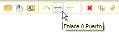
Figura 40. Creación de enlace a puerto
Para el enlace a puerto no es necesario ningún parametro de manera obligatoria, aunque opcionalmente se pueden suministrar el estilo de la línea que repesenta la conexion.
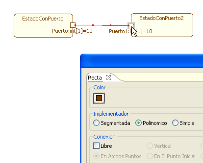
Figura 41. Conexión de puerto a puerto